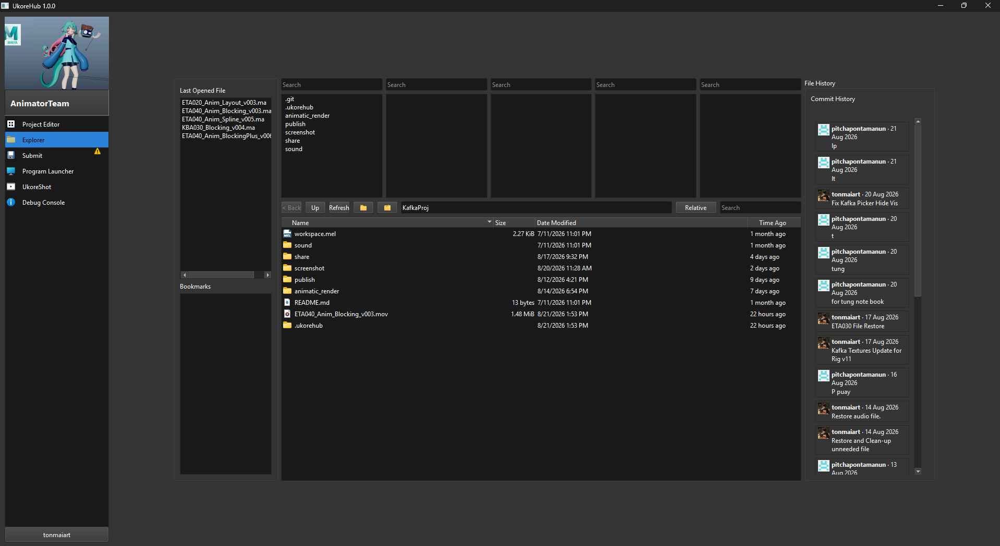
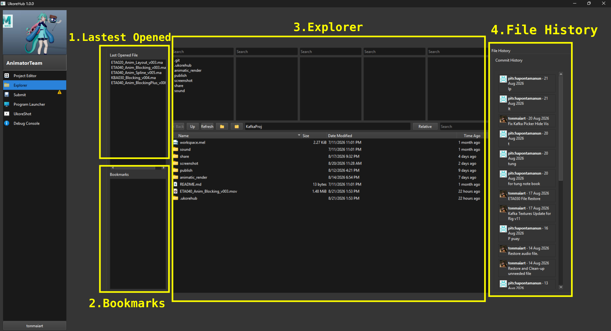

Explorer¶

เป็น Explorer เอาไว้เปิดไฟล์ต่างๆใน Repositories

- Last Opened FIle : แสดงไฟล์ที่เปิดล่าสุด
- Bookmarks : แสดงไฟล์ , folder ที่ถูก Bookmarks ไว้
- File History : บอกประวัติของไฟล์ที่เลือก
- File Explorer : เป็น Expolorer สำหรับเปิดไฟล์งานต่างๆ ของ Repositories นี้